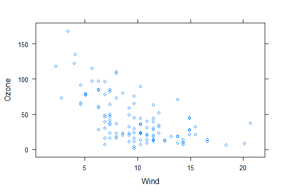
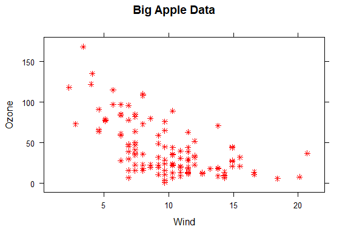
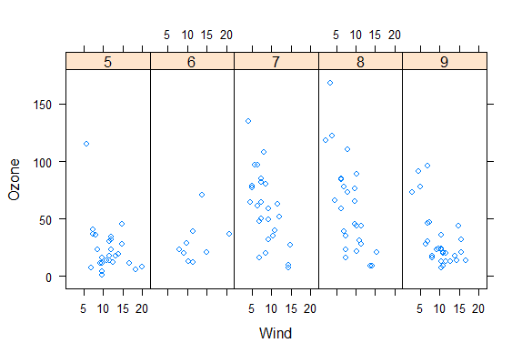
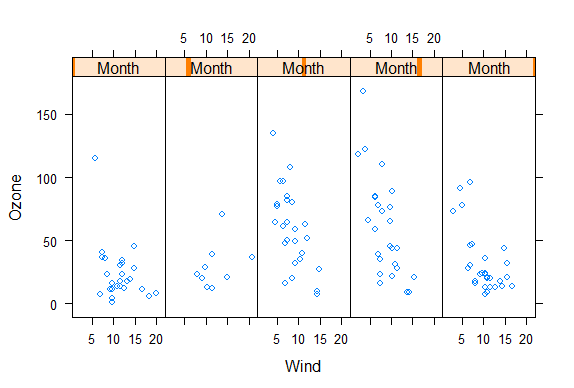
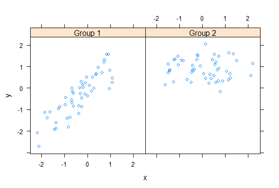
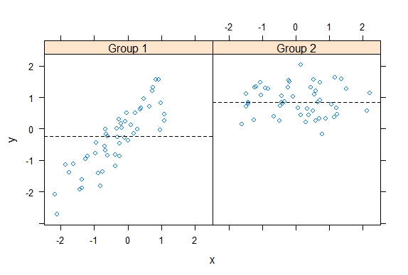
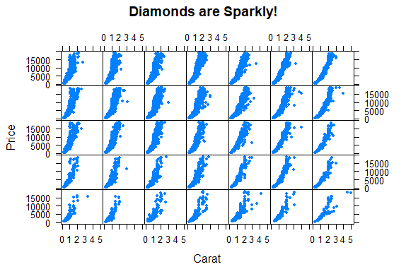
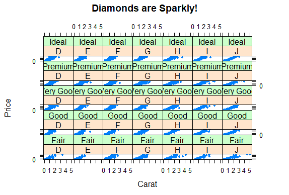

Lattice Plotting System
R version 4.0.0 (2020-04-24) -- "Arbor Day"
Copyright (C) 2020 The R Foundation for Statistical Computing
Platform: x86_64-w64-mingw32/x64 (64-bit)
R is free software and comes with ABSOLUTELY NO WARRANTY.
You are welcome to redistribute it under certain conditions.
Type 'license()' or 'licence()' for distribution details.
Natural language support but running in an English locale
R is a collaborative project with many contributors.
Type 'contributors()' for more information and
'citation()' on how to cite R or R packages in publications.
Type 'demo()' for some demos, 'help()' for on-line help, or
'help.start()' for an HTML browser interface to help.
Type 'q()' to quit R.
setwd("C:/Users/kk/Downloads/edu/DataScienceJHU/DataScienceWithR/04_Exploratory_Data_Analysis/workspace")
library(ggplot2)
library(lattice)
library(swirl)
| Hi! Type swirl() when you are ready to begin.
swirl()
| Welcome to swirl! Please sign in. If you've been here before, use the same name as
| you did then. If you are new, call yourself something unique.
What shall I call you? Krishnakanth Allika
| Please choose a course, or type 0 to exit swirl.
1: Exploratory Data Analysis
2: Take me to the swirl course repository!
Selection: 1
| Please choose a lesson, or type 0 to return to course menu.
1: Principles of Analytic Graphs 2: Exploratory Graphs
3: Graphics Devices in R 4: Plotting Systems
5: Base Plotting System 6: Lattice Plotting System
7: Working with Colors 8: GGPlot2 Part1
9: GGPlot2 Part2 10: GGPlot2 Extras
11: Hierarchical Clustering 12: K Means Clustering
13: Dimension Reduction 14: Clustering Example
15: CaseStudy
Selection: 6
| Attempting to load lesson dependencies...
| Package ‘lattice’ loaded correctly!
| Package ‘ggplot2’ loaded correctly!
| | 0%
| Lattice_Plotting_System. (Slides for this and other Data Science courses may be
| found at github https://github.com/DataScienceSpecialization/courses/. If you care
| to use them, they must be downloaded as a zip file and viewed locally. This lesson
| corresponds to 04_ExploratoryAnalysis/PlottingLattice.)
...
|= | 1%
| In another lesson, we gave you an overview of the three plotting systems in R. In
| this lesson we'll focus on the lattice plotting system. As we did with the base
| plotting system, we'll focus on using lattice to create graphics on the screen
| device rather than another graphics device.
...
|== | 3%
| The lattice plotting system is completely separate and independent of the base
| plotting system. It's an add-on package so it has to be explicitly loaded with a
| call to the R function library. We've done this for you. The R Documentation tells
| us that lattice "is an implementation of Trellis graphics for R. It is a powerful
| and elegant high-level data visualization system with an emphasis on multivariate
| data."
...
|=== | 4%
| Lattice is implemented using two packages. The first is called, not surprisingly,
| lattice, and it contains code for producing Trellis graphics. Some of the functions
| in this package are the higher level functions which you, the user, would call.
| These include xyplot, bwplot, and levelplot.
...
|===== | 6%
| If xyplot produces a scatterplot, what kind of plot does bwplot produce?
1: box and whisker
2: big and whittle
3: bad and wonderful
4: black and white
Selection: 1
| That's a job well done!
|====== | 7%
| The second package in the lattice system is grid which contains the low-level
| functions upon which the lattice package is built. You, the user, seldom call
| functions from the grid package directly.
...
|======= | 9%
| Unlike base plotting, the lattice system does not have a "two-phase" aspect with
| separate plotting and annotation. Instead all plotting and annotation is done at
| once with a single function call.
...
|======== | 10%
| The lattice system, as the base does, provides several different plotting functions.
| These include xyplot for creating scatterplots, bwplot for box-and-whiskers plots or
| boxplots, and histogram for histograms. There are several others (stripplot,
| dotplot, splom and levelplot), which we won't cover here.
...
|========= | 12%
| Lattice functions generally take a formula for their first argument, usually of the
| form y ~ x. This indicates that y depends on x, so in a scatterplot y would be
| plotted on the y-axis and x on the x-axis.
...
|========== | 13%
| Here's an example of typical lattice plot call, xyplot(y ~ x | f g, data). The f
| and g represent the optional conditioning variables. The represents interaction
| between them. Remember when we said that lattice is good for plotting multivariate
| data? That's where these conditioning variables come into play.
...
|=========== | 15%
| The second argument is the data frame or list from which the variables in the
| formula should be looked up. If no data frame or list is passed, then the parent
| frame is used. If no other arguments are passed, the default values are used.
...
|============= | 16%
| Recall the airquality data we've used before. We've loaded it again for you. To
| remind yourself what it looks like run the R command head with airquality as an
| argument to see what the data looks like.
head(airquality)
Ozone Solar.R Wind Temp Month Day 1 41 190 7.4 67 5 1 2 36 118 8.0 72 5 2 3 12 149 12.6 74 5 3 4 18 313 11.5 62 5 4 5 NA NA 14.3 56 5 5 6 28 NA 14.9 66 5 6| You got it right!
|============== | 18%
| Now try running xyplot with the formula Ozone~Wind as the first argument and the
| second argument data set equal to airquality.
xyplot(Ozone~Wind,data=airquality)

| That's a job well done!
|=============== | 19%
| Look vaguely familiar? The dots are blue, instead of black, but lattice labeled the
| axes for you. You can use some of the same graphical parameters (e.g., pch and col)
| that you used in the base package in calls to lattice functions.
...
|================ | 21%
| Now rerun xyplot with the formula Ozone~Wind as the first argument and the second
| argument data set equal to airquality (use the up arrow to save typing). This time
| add the arguments col set equal to "red", pch set equal to 8, and main set equal to
| "Big Apple Data".
xyplot(Ozone ~ Wind, data = airquality, pch=8, col="red", main="Big Apple Data")

| You are really on a roll!
|================= | 22%
| Red snowflakes are cool, right? Now that you’ve seen the basic xyplot() and some of
| its arguments, you might want to experiment more by yourself when you're done with
| the lesson to discover what other arguments and colors are available. (If you can't
| wait to experiment, recall that swirl has play() and nxt() functions. At a command
| prompt, typing play() allows you to leave swirl temporarily so you can try different
| R commands at the console. Typing nxt() when you’re done playing brings you back to
| swirl and you can resume your lesson.)
...
|================== | 24%
| Now you'll see how easy it is to generate a multipanel plot using a single lattice
| command.
...
|==================== | 25%
| Run xyplot with the formula Ozone~Wind | as.factor(Month) as the first argument and
| the second argument data set equal to airquality (use the up arrow to save typing).
| So far, not much is different, right? Add a third argument, layout, set equal to
| c(5,1).
xyplot(Ozone~Wind|as.factor(Month),data=airquality,layout=c(5,1))

| Great job!
|===================== | 27%
| Note that the default color and plotting character are back. What did the
| as.factor(Month) do?
1: Randomly divided the data into 5 panels
2: Huh?
3: Displayed and labeled each subplot with the month's integer
4: Displayed the data by individual months
Selection: 3
| Perseverance, that's the answer.
|====================== | 28%
| Since Month is a named column of the airquality dataframe we had to tell R to treat
| it as a factor. To see how this affects the plot, rerun the xyplot command you just
| ran, but use Ozone ~ Wind | Month instead of Ozone ~ Wind | as.factor(Month) as the
| first argument.
xyplot(Ozone~Wind|Month,data=airquality,layout=c(5,1))

| Keep working like that and you'll get there!
|======================= | 30%
| Not as informative, right? The word Month in each panel really doesn't tell you much
| if it doesn't identify which month it's plotting. Notice that the actual data is the
| same between the two plots, though.
...
|======================== | 31%
| Lattice functions behave differently from base graphics functions in one critical
| way. Recall that base graphics functions plot data directly to the graphics device
| (e.g., screen, or file such as a PDF file). In contrast, lattice graphics functions
| return an object of class trellis.
...
|========================= | 33%
| The print methods for lattice functions actually do the work of plotting the data on
| the graphics device. They return "plot objects" that can be stored (but it’s usually
| better to just save the code and data). On the command line, trellis objects are
| auto-printed so that it appears the function is plotting the data.
...
|========================== | 34%
| To see this, create a variable p which is assigned the output of this simple call to
| xyplot, xyplot(Ozone~Wind,data=airquality).
p<-xyplot(Ozone~Wind,data=airquality)
| You are amazing!
|============================ | 36%
| Nothing plotted, right? But the object p is around.
...
|============================= | 37%
| Type p or print(p) now to see it.
p
| Excellent job!
|============================== | 39%
| Like magic, it appears. Now run the R command names with p as its argument.
names(p)
[1] "formula" "as.table" "aspect.fill" "legend"
[5] "panel" "page" "layout" "skip"
[9] "strip" "strip.left" "xscale.components" "yscale.components"
[13] "axis" "xlab" "ylab" "xlab.default"
[17] "ylab.default" "xlab.top" "ylab.right" "main"
[21] "sub" "x.between" "y.between" "par.settings"
[25] "plot.args" "lattice.options" "par.strip.text" "index.cond"
[29] "perm.cond" "condlevels" "call" "x.scales"
[33] "y.scales" "panel.args.common" "panel.args" "packet.sizes"
[37] "x.limits" "y.limits" "x.used.at" "y.used.at"
[41] "x.num.limit" "y.num.limit" "aspect.ratio" "prepanel.default"
[45] "prepanel"
| All that practice is paying off!
|=============================== | 40%
| We see that the trellis object p has 45 named properties, the first of which is
| "formula" which isn't too surprising. A lot of these properties are probably NULL in
| value. We've done some behind-the-scenes work for you and created two vectors. The
| first, mynames, is a character vector of the names in p. The second is a boolean
| vector, myfull, which has TRUE values for nonnull entries of p. Run mynames[myfull]
| to see which entries of p are not NULL.
mynames[myfull]
[1] "formula" "as.table" "aspect.fill" "panel"
[5] "skip" "strip" "strip.left" "xscale.components"
[9] "yscale.components" "axis" "xlab" "ylab"
[13] "xlab.default" "ylab.default" "x.between" "y.between"
[17] "index.cond" "perm.cond" "condlevels" "call"
[21] "x.scales" "y.scales" "panel.args.common" "panel.args"
[25] "packet.sizes" "x.limits" "y.limits" "aspect.ratio"
[29] "prepanel.default"
| That's the answer I was looking for.
|================================ | 42%
| Wow! 29 nonNull values for one little plot. Note that a lot of them are like the
| ones we saw in the base plotting system. Let's look at the values of some of them.
| Type p[["formula"]] now.
p[["formula"]]
Ozone ~ Wind
| You are amazing!
|================================= | 43%
| Not surprising, is it? It's a familiar formula. Now look at p's x.limits. Remember
| the double square brackets and quotes.
p[["x.limits"]]
[1] 0.37 22.03
| Keep up the great work!
|================================== | 45%
| They match the plot, right? The x values are indeed between .37 and 22.03.
...
|==================================== | 46%
| Again, not surprising. Before we wrap up, let's talk about lattice's panel functions
| which control what happens inside each panel of the plot. The ease of making
| multi-panel plots makes lattice very appealing. The lattice package comes with
| default panel functions, but you can customize what happens in each panel.
...
|===================================== | 48%
| Panel functions receive the x and y coordinates of the data points in their panel
| (along with any optional arguments). To see this, we've created some data for you -
| two 100-long vectors, x and y. For its first 50 values y is a function of x, for the
| last 50 values, y is random. We've also defined a 100-long factor vector f which
| distinguishes between the first and last 50 elements of the two vectors. Run the R
| command table with f as it argument.
table(f)
f Group 1 Group 2 50 50| That's a job well done!
|====================================== | 49%
| The first 50 entries of f are "Group 1" and the last 50 are "Group 2". Run xyplot
| with two arguments. The first is the formula y~x|f, and the second is layout set
| equal to c(2,1). Note that we're not providing an explicit data argument, so xyplot
| will look in the environment and see the x and y that we've generated for you.
xyplot(y~x|f,layout=c(2,1))

| You nailed it! Good job!
|======================================= | 51%
| To understand this a little better look at the variable v1 we've created for you.
v1
[1] -2.185287 1.101780 -2.716851 1.569850
| You're the best!
|======================================== | 52%
| The first two numbers are the range of the x values of Group 1 and the last two
| numbers are the range of y values of Group 1. See how they match the values of the
| left panel (Group 1) in the plot. Now look at v2 which holds the comparable numbers
| for Group 2.
v2
[1] -1.6066772 2.2205197 -0.1605085 2.0341048
| You nailed it! Good job!
|========================================= | 54%
| Again, the values match the plot. That's reassuring. We've copied some code from the
| slides for you. To see it, type myedit("plot1.R"). This will open your editor and
| display the R code in it.
myedit("plot1.R")
p <- xyplot(y ~ x | f, panel = function(x, y, ...) {
panel.xyplot(x, y, ...) ## First call the default panel function for 'xyplot'
panel.abline(h = median(y), lty = 2) ## Add a horizontal line at the median
})
print(p)
invisible()| You are quite good my friend!
|=========================================== | 55%
| How many calls to basic lattice plotting functions are there in plot1.R?
1: 1
2: 2
3: 3
Selection: 1
| You got it!
|============================================ | 57%
| Note the panel function. How many formal arguments does it have?
1: 2
2: 3
3: 1
Selection: 1
| One more time. You can do it!
| You have to count the ... as an argument?
1: 1
2: 3
3: 2
Selection: 2
| Excellent job!
|============================================= | 58%
| The panel function has 3 arguments, x, y and ... . This last stands for all other
| arguments (such as graphical parameters) you might want to include. There are 2
| lines in the panel function. Each invokes a panel method, the first to plot the data
| in each panel (panel.xyplot), the second to draw a horizontal line in each panel
| (panel.abline). Note the similarity of this last call to that of the base plotting
| function of the same name.
...
|============================================== | 60%
| We've defined a function for you, pathtofile, which takes a filename as its
| argument. This makes sure R can find the file on your computer. Now run the R
| command source with two arguments. The first is the call to pathtofile with the
| string "plot1.R" as its argument and the second is the argument local set equal to
| TRUE. This command will run the code contained in plot1.R within the swirl
| environment so you can see what it does.
source(pathtofile("plot1.R"),local=TRUE)

| That's the answer I was looking for.
|=============================================== | 61%
| See how the lines appear. The plot shows two panels because...?
1: there are 2 calls to panel methods
2: f contains 2 factors
3: there are 2 variables
4: lattice can handle at most 2 panels
Selection: 2
| All that hard work is paying off!
|================================================ | 63%
| We've copied another piece of similar code, i.e., a call to xyplot with a custom
| panel function, from the slides. To see it, type myedit("plot2.R"). This will open
| your editor and display the R code in it.
myedit("plot2.R")
p2 <- xyplot(y ~ x | f, panel = function(x, y, ...) {
panel.xyplot(x, y, ...) ## First call default panel function
panel.lmline(x, y, col = 2) ## Overlay a simple linear regression line
})
print(p2)
invisible()| You nailed it! Good job!
|================================================= | 64%
| You can see how plot2.R differs from plot1.R, right?
...
|=================================================== | 66%
| Again, run the R command source with the two arguments pathtofile("plot2.R") and
| local=TRUE. This will run the code in plot2.R.
source(pathtofile("plot2.R"),local=TRUE)
| You are doing so well!
|==================================================== | 67%
| The regression lines are red because ...?
1: R always plots regression lines in red
2: R is the first letter of the word red
3: the custom panel function specified a col argument
Selection: 3
| Excellent job!
|===================================================== | 69%
| Before we close we'll look at how easily lattice can handle a plot with a great many
| panels. (The sky's the limit.) We've loaded some diamond data for you. It comes with
| the ggplot2 package. We'll use it just to show off lattice's panel plotting
| capability.
...
|====================================================== | 70%
| The data is in the data frame diamonds. Use the R command str to see what it looks
| like.
str(diamonds)
tibble [53,940 x 10] (S3: tbl_df/tbl/data.frame) $ carat : num [1:53940] 0.23 0.21 0.23 0.29 0.31 0.24 0.24 0.26 0.22 0.23 ... $ cut : Ord.factor w/ 5 levels "Fair"<"Good"<..: 5 4 2 4 2 3 3 3 1 3 ... $ color : Ord.factor w/ 7 levels "D"<"E"<"F"<"G"<..: 2 2 2 6 7 7 6 5 2 5 ... $ clarity: Ord.factor w/ 8 levels "I1"<"SI2"<"SI1"<..: 2 3 5 4 2 6 7 3 4 5 ... $ depth : num [1:53940] 61.5 59.8 56.9 62.4 63.3 62.8 62.3 61.9 65.1 59.4 ... $ table : num [1:53940] 55 61 65 58 58 57 57 55 61 61 ... $ price : int [1:53940] 326 326 327 334 335 336 336 337 337 338 ... $ x : num [1:53940] 3.95 3.89 4.05 4.2 4.34 3.94 3.95 4.07 3.87 4 ... $ y : num [1:53940] 3.98 3.84 4.07 4.23 4.35 3.96 3.98 4.11 3.78 4.05 ... $ z : num [1:53940] 2.43 2.31 2.31 2.63 2.75 2.48 2.47 2.53 2.49 2.39 ...| Perseverance, that's the answer.
|======================================================= | 72%
| So the data frame contains 10 pieces of information for each of 53940 diamonds. Run
| the R command table with diamonds$color as an argument.
table(diamonds$color)
D E F G H I J 6775 9797 9542 11292 8304 5422 2808| You nailed it! Good job!
|======================================================== | 73%
| We see 7 colors each represented by a letter. Now run the R command table with two
| arguments, diamonds$color and diamonds$cut.
table(diamonds$color,diamonds$cut)
Fair Good Very Good Premium Ideal D 163 662 1513 1603 2834 E 224 933 2400 2337 3903 F 312 909 2164 2331 3826 G 314 871 2299 2924 4884 H 303 702 1824 2360 3115 I 175 522 1204 1428 2093 J 119 307 678 808 896| That's a job well done!
|========================================================= | 75%
| We see a 7 by 5 array with counts indicating how many diamonds in the data frame
| have a particular color and cut. From the table, which is the most frequent
| combination?
1: Ideal cut of color F.
2: Ideal color of cut G
3: Premium cut of color G
4: Ideal cut of color G
Selection: 4
| Keep up the great work!
|=========================================================== | 76%
| To save you some trouble we've defined three character strings for you, labels for
| the x- and y-axes and a main title. They're in the file myLabels.R, so run myedit on
| this file to see them. Remember to put the file name in quotes when you call myedit.
myedit("myLabels.R")
myxlab <- "Carat"
myylab <- "Price"
mymain <- "Diamonds are Sparkly!"| Excellent job!
|============================================================ | 78%
| Now run source with pathtofile("myLabels.R") and local set equal to TRUE.
source(pathtofile("myLabels.R"),local=TRUE)
| All that hard work is paying off!
|============================================================= | 79%
| Now call xyplot with the formula price~carat | color*cut and data set equal to
| diamonds. In addition, set the argument strip equal to FALSE, pch set equal to 20,
| xlab to myxlab, ylab to myylab, and main to mymain. The plot may take longer than
| previous plots because it is bigger.
xyplot(price~carat|color*cut,data=diamonds,strip=FALSE,pch=20,xlab=myxlab,ylab=myylab,main=mymain)

| Excellent work!
|============================================================== | 81%
| Pretty cool, right? 35 panels, one for each combination of color and cut. The dots
| (pch=20) show how prices for the diamonds in each category (panel) vary depending on
| carat.
...
|=============================================================== | 82%
| Are colors defining the rows or columns of the plot?
1: columns
2: rows
Selection: 1
| You got it!
|================================================================ | 84%
| Were you curious about that argument strip? I know I was. Now rerun the xyplot
| command you just ran (use the up arrow key to retrieve it), this time without the
| strip argument.
xyplot(price~carat|color*cut,data=diamonds,pch=20,xlab=myxlab,ylab=myylab,main=mymain)

| All that hard work is paying off!
|================================================================== | 85%
| The plot shows that the strip argument ....
1: labels each panel
2: removes information from the plot
3: makes the plot less intelligible
4: has a default value of FALSE
Selection: 1
| All that practice is paying off!
|=================================================================== | 87%
| Review time!!!
...
|==================================================================== | 88%
| True or False? Lattice plots are constructed by a series of calls to core functions.
1: False
2: True
Selection: 1
| That's the answer I was looking for.
|===================================================================== | 90%
| True or False? Lattice plots are constructed with a single function call to a core
| lattice function (e.g. xyplot)
1: False
2: True
Selection: 2
| You got it!
|====================================================================== | 91%
| True or False? Aspects like margins and spacing are automatically handled and
| defaults are usually sufficient.
1: False
2: True
Selection: 2
| That's a job well done!
|======================================================================= | 93%
| True or False? The lattice system is ideal for creating conditioning plots where you
| examine the same kind of plot under many different conditions.
1: False
2: True
Selection: 2
| Excellent job!
|======================================================================== | 94%
| True or False? The lattice system, like the base plotting system, returns a trellis
| plot object.
1: False
2: True
Selection: 1
| Nice work!
|========================================================================== | 96%
| True or False? Panel functions can NEVER be customized to modify what is plotted in
| each of the plot panels.
1: True
2: False
Selection: 2
| Your dedication is inspiring!
|=========================================================================== | 97%
| True or False? Lattice plots can display at most 20 panels in a single plot.
1: False
2: True
Selection: 1
| You are doing so well!
|============================================================================ | 99%
| Congrats! We hope this lesson didn't leave you climbing the trellis.
...
|=============================================================================| 100%
| Would you like to receive credit for completing this course on Coursera.org?
1: No
2: Yes
Selection: 2
What is your email address? xxxxxx@xxxxxxxxxxxx
What is your assignment token? xXxXxxXXxXxxXXXx
Grade submission succeeded!
| Keep up the great work!
| You've reached the end of this lesson! Returning to the main menu...
| Please choose a course, or type 0 to exit swirl.
1: Exploratory Data Analysis
2: Take me to the swirl course repository!
Selection: 0
| Leaving swirl now. Type swirl() to resume.
rm(list=ls())
Last updated 2020-05-08 12:20:33.102850 IST
Comments